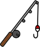
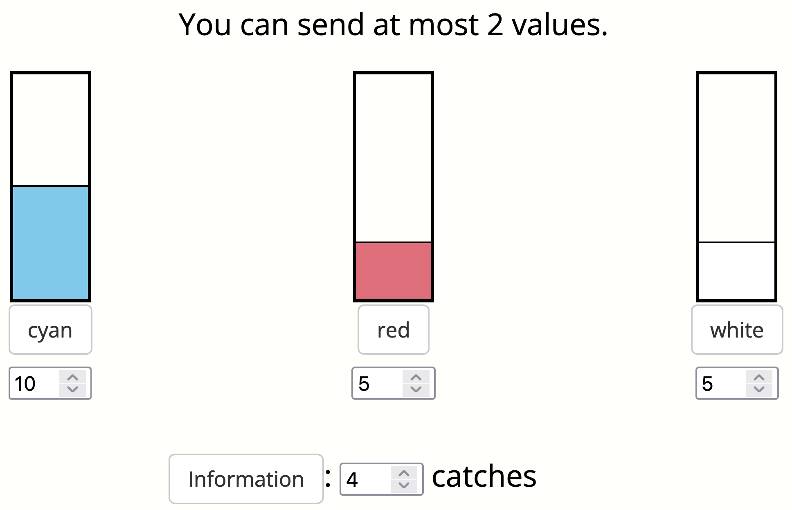
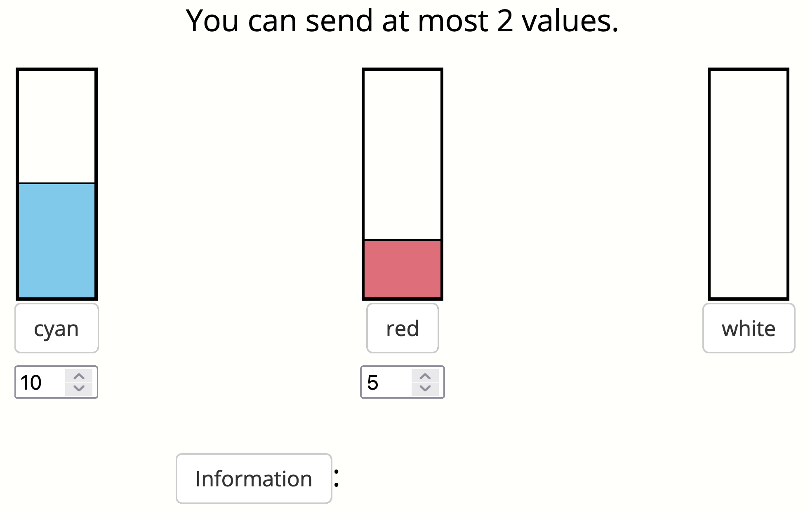

In this experiment, you will play the role of a wildlife researcher who is studying fish populations in different ponds. You will visit four ponds that each have 20 fish in them. There are different types of fish in each pond. Your goal is to learn about how many fish of each color live in the ponds.
At each pond, you will complete the following phases:
You will earn a bonus that depends on the accuracy of your predictions and the predictions made by the participants who receive your messages.
When you first arrive at a pond, you will go fishing. You will catch some fish and observe their colors. After catching a fish, you release it back into the pond. In this phase, you should click the fishing rod to go fishing. You will then see which type of fish you caught.
You will not be able to see the fish you caught after you release them, so make sure you remember which fish you caught.
Next, you will report your beliefs. You will be asked to predict the most likely number of fish of each type in the pond, along with how much information you have for that prediction. The prediction interface looks like this:

You will earn an individual bonus that depends on how close your predicted numbers were to the true numbers and the information value you enter.
The value you enter in the information box deterimes the risk and potential reward of your predictions. If the numbers of fish you report are close to the true numbers, setting the information value high will increase your bonus. If the numbers you report are far from the true numbers, setting the information value high will decrease your bonus. Setting the information value low has the opposite effect.
You can think of the amount of information as the total number of catches that inform your decision. For example, if you've caught four fish and have no other information, entering an information value of 4 will maximize your expected bonus.
Finally, you will need to leave the pond. Before you leave, you will have the opportunity to compose a message for a future participant.
Your message will be initialized to the prediction you just made, but you will only be able to send a limited number of values. We have a limit of two for this example.
We can click the buttons to hide and show certain values. For example, we can click the buttons for "white" and "information" to hide those values. We could send the following message:
Your bonus will depend on the performance of the participants who read your messages, so make sure to send the most helpful message you can!